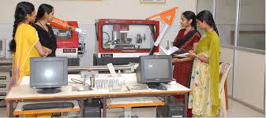

Mechanical Engineering (Mech) is one of the most versatile and broad fields of engineering, focusing on the design, analysis, manufacturing, and maintenance of mechanical systems. It integrates principles of physics, materials science, thermodynamics, fluid mechanics, and mechanics of solids to solve real-world problems. The curriculum covers subjects like machine design, manufacturing processes, robotics, heat transfer, and mechanics. Students are trained to develop innovative solutions for various industries, including automotive, aerospace, energy, and robotics. Mechanical engineers are involved in designing machines, engines, and tools that power industries and everyday life.
The Mech branch also focuses on modern advancements such as automation, 3D printing, and sustainable energy technologies. Students are encouraged to apply their theoretical knowledge to practical projects, often working with cutting-edge software for computer-aided design (CAD), finite element analysis (FEA), and computational fluid dynamics (CFD). With a deep understanding of mechanical systems, Mech graduates are prepared to work in diverse fields such as product design, manufacturing, energy systems, and research. The continuous need for innovation in industries like automotive and robotics makes Mechanical Engineering a key branch in the future of technology and engineering.

Mechanical Engineering
Mechanical Engineers do things with less power and great efficiency

Mechanical Enginerering Lab Facility
The Mechanical Engineering (Mech) lab facilities at our college are equipped with state-of-the-art tools and equipment to provide students with hands-on experience in various areas of mechanical engineering. The labs support practical learning in subjects like machine design, thermodynamics, fluid mechanics, and manufacturing processes.
Additionally, the Computer-Aided Design (CAD) Lab and Computational Fluid Dynamics (CFD) Lab give students the opportunity to use industry-standard software to design and simulate mechanical systems. The Automation Lab introduces students to robotic systems and automation processes, while the Vibration Lab focuses on the study of vibrations in mechanical systems
Additionally, the Computer-Aided Design (CAD) Lab and Computational Fluid Dynamics (CFD) Lab give students the opportunity to use industry-standard software to design and simulate mechanical systems. The Automation Lab introduces students to robotic systems and automation processes, while the Vibration Lab focuses on the study of vibrations in mechanical systems
